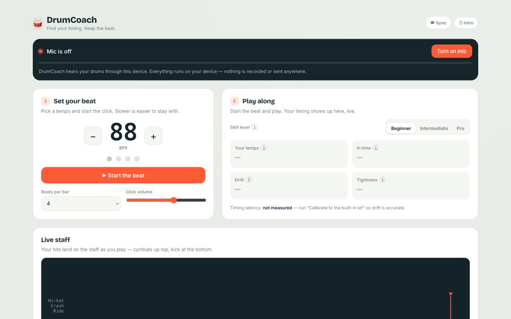
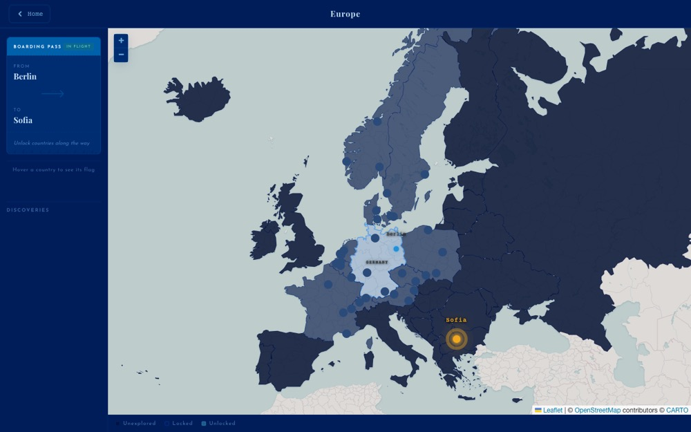
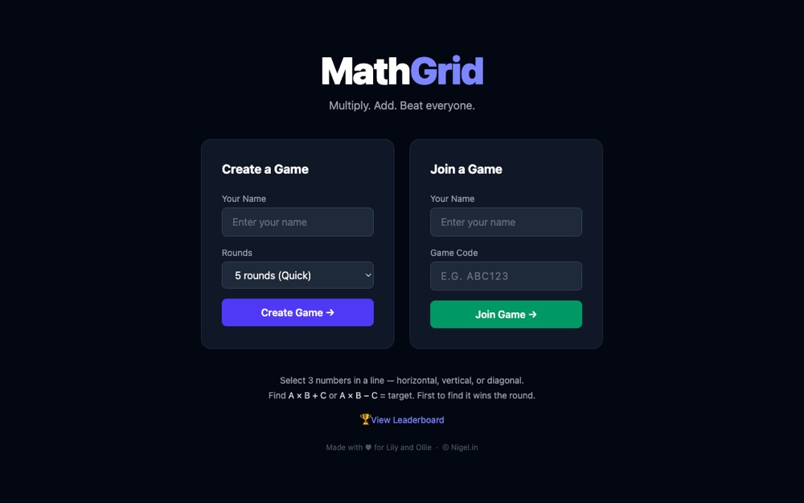
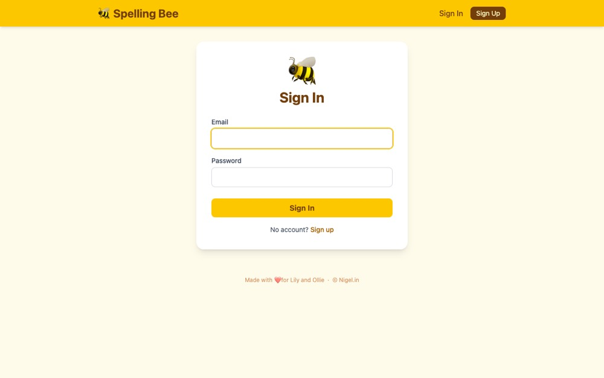

Projects.
A handful of small apps I built for my kids this past year — each one a hands-off experiment in how far Claude Code can go on its own.
-

Jun 2026
DrumCoach
I've been learning the drums with my son this year, and we both struggle with timing — so I built an app that listens to us play and coaches it. The goal was something that just works on any phone or laptop, no specialist audio gear: you play near the mic and DrumCoach detects and classifies each hit, notates it on a live drum staff, and measures your timing with feedback ranges tuned to your level. It was great to work with high- and low-pass filters, Fourier transforms, and spectral centroids again — DSP concepts I hadn't touched since my computer-engineering classes. I also got to play with Firestore as a backing store, syncing practice data across devices tied to a real Google identity.
-

May 2026
Spell to Fly
A geography-and-spelling game, and my excuse to work with maps again. I've loved mapping software ever since my Nokia days in Berlin working on Ovi Maps (2009–2010), so I put Claude to the test on map data, pathfinding, and spoken audio. You fly across a region — Europe, Africa, Asia, or the Americas — hopping from city to city by spelling each country and city name hangman-style, guided by text-to-speech pronunciation. Only the territory bordering you is revealed, so you're navigating a hidden graph toward a ticketed destination. I built it to help my kids learn geography and improve their spelling together. Getting the viewport and zoom behaviour right was genuinely hard to do with AI. Something like this would have taken me weeks of full-time work back in Berlin, but this time I had it running in two weekends.
-

May 2026
MathGrid
A real-time multiplayer arithmetic game, and my go at a more ambitious hands-off Claude Code build. It started as a paper card game I made for my kids a year ago; this digital version lets 2+ players race on a shared 6×6 grid to find three numbers in a line that satisfy a target formula. I built it partly to sharpen my kids' mental arithmetic and partly so my wife and I could play against them across our own devices. There's a gentler No Multiplication mode for younger players, room codes to join a game, and a leaderboard. The real-time coordination runs on Rails' Action Cable (via Turbo Streams + Redis) — and I made a point of getting it all running on a minimum Heroku spec.
-

May 2026
Spelling Bee
A hands-off experiment in AI-only coding: I let Claude Code build the whole thing to see how it handles animation, game rules, DB schema design, and deployment. It's a small spelling game aimed at kids aged 6–10, where an animated bee fills in with each wrong guess. There's a typed Classic mode and a spoken Voice mode — the latter added to mirror the way my own kids were learning their spelling out loud in school. Words come from the Oxford 3000 (with auto-fetched definitions), and scores land on a leaderboard.